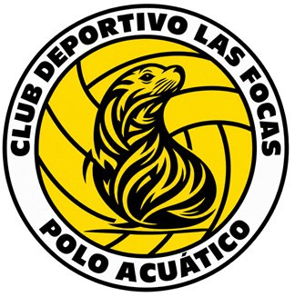
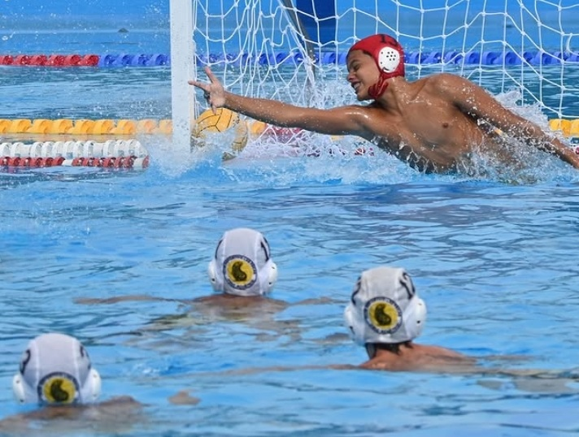

Club Histórico de Polo Acuático en Ibagué.
Más de 30 años de pasión en el agua.
¡Únete a nosotros y entrena con los mejores!
El Club Deportivo Las Focas de Waterpolo es una organización registrada en Ibagué, Tolima, dedicada al fomento y desarrollo del waterpolo en la región.
Promover el waterpolo como disciplina deportiva formativa, recreativa y competitiva, ofreciendo espacios de entrenamiento y desarrollo de talento acuático.

En el Club Las Focas Ibagué ofrecemos entrenamientos especializados para todas las categorías, con enfoque en técnica, táctica y preparación física. Nuestro equipo está comprometido con el desarrollo deportivo y personal de cada atleta.
Ya seas principiante o tengas experiencia, aquí encontrarás un espacio para crecer, competir y disfrutar del waterpolo.